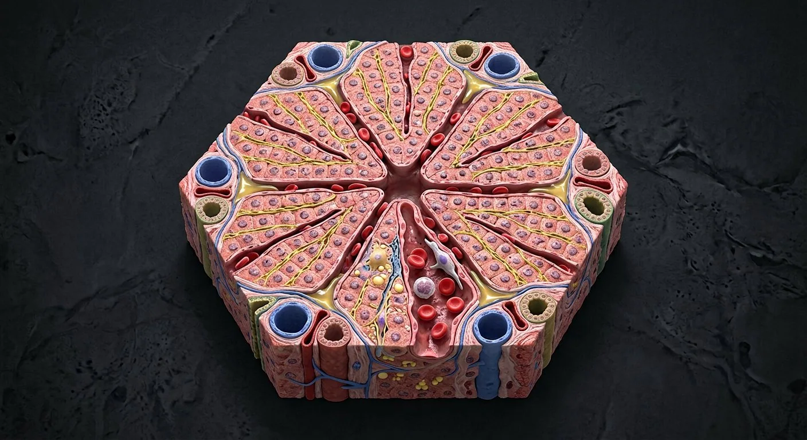

Portal tractInterlobular bile ductLymphatic channels of portal tractPortal venuleHepatic arteriolePeribiliary capillary plexusLimiting plateZone 1 · periportalCanals of HeringHepatic sinusoidZone 2 · intermediateSinusoidal endotheliumKupffer cellsSpace of DisseHepatic stellate cellsBile canaliculiHepatocyte platesZone 3 · centrilobularCentral veinHepatic vein drainage- 01Central vein
- 02Portal tract
- 03Portal venule
- 04Hepatic arteriole
- 05Interlobular bile duct
- 06Hepatocyte plates
- 07Hepatic sinusoid
- 08Sinusoidal endothelium
- 09Space of Disse
- 10Bile canaliculi
- 11Canals of Hering
- 12Kupffer cells
- 13Hepatic stellate cells
- 14Zone 1 · periportal
- 15Zone 2 · intermediate
- 16Zone 3 · centrilobular
- 17Hepatic vein drainage
- 18Limiting plate
- 19Peribiliary capillary plexus
- 20Lymphatic channels of portal tract
How this part of the body works
The classical hepatic lobule places a central vein in the middle and portal tracts at its margins. Portal venous and hepatic arterial blood mix in sinusoids and travel toward the central vein, while hepatocytes secrete bile into canaliculi that drain outward toward portal bile ducts. Fenestrated sinusoidal endothelium borders the space of Disse; Kupffer macrophages reside in/along sinusoids and stellate cells in the perisinusoidal space. The hepatic acinus maps perfusion zones: zone 1 periportal receives blood first; zone 3 near terminal hepatic venules is relatively most hypoxia-vulnerable.
Read the anatomy, part by part
These 20 structures describe anatomy related to the chapter’s regional illustration. Each entry separates location, function and a clinical point.
Portal venule
Small portal vein branch delivering nutrient-rich splanchnic blood to sinusoids.
What it doesFeeds liver parenchyma.
Clinical connectionPortal obstruction can raise portal pressure.
Hepatic arteriole
Terminal hepatic artery branch carrying oxygenated blood.
What it doesAdds oxygen to sinusoidal flow and supplies biliary structures.
Clinical connectionNot the same as portal venous inflow.
Interlobular bile duct
Cholangiocyte-lined duct traveling with arterial and portal venous branches.
What it doesReceives bile from canalicular/ductular route.
Clinical connectionDuct injury causes cholestatic patterns.
Portal tract
Connective-tissue region carrying portal venule, hepatic arteriole and bile duct plus nerves/lymphatics.
What it doesOrganizes inflow and bile outflow at lobular margin.
Clinical connectionTriad diagrams omit additional vessels/lymphatics.
Central vein
Terminal hepatic venule at center of classical lobule.
What it doesCollects sinusoidal blood toward hepatic veins.
Clinical connectionZone 3 near its side is vulnerable to low oxygen.
Hepatic sinusoid
Wide, discontinuous capillary channel between plates of hepatocytes.
What it doesAllows blood–hepatocyte exchange en route to central vein.
Clinical connectionFibrosis can impair sinusoidal exchange.
Sinusoidal endothelium
Fenestrated endothelial layer lining hepatic sinusoids.
What it doesFacilitates plasma exchange into space of Disse.
Clinical connectionCapillarization reduces permeability in disease.
Space of Disse
Perisinusoidal compartment between endothelium and hepatocytes.
What it doesExchange interface for nutrients and metabolites.
Clinical connectionActivated stellate cells deposit fibrotic matrix here.
Hepatocyte plates
Rows of hepatocytes radiating around central vein in classical diagrams.
What it doesMetabolism, protein production, detoxification and bile secretion.
Clinical connectionPatterns vary in three dimensions.
Bile canaliculi
Tiny sealed channels formed between adjacent hepatocyte apical surfaces.
What it doesMove bile toward portal ductules opposite blood flow.
Clinical connectionDo not confuse with sinusoids containing blood.
Canals of Hering
Transitional ductules connecting canalicular network and interlobular ducts.
What it doesDeliver bile to portal ducts.
Clinical connectionImportant epithelial interface during injury/repair.
Kupffer cells
Resident macrophages associated with hepatic sinusoids.
What it doesClear particles and signal to immune cells.
Clinical connectionNot identical to collagen-producing stellate cells.
Hepatic stellate cells
Vitamin-A-storing cells in space of Disse that can activate to fibrogenic phenotype.
What it doesMaintain matrix balance in health.
Clinical connectionActivation drives hepatic fibrosis.
Zone 1 · periportal
Hepatocytes closest to incoming portal/arterial blood.
What it doesReceive oxygenated mixed blood first.
Clinical connectionRelatively less hypoxic than centrilobular zone.
Zone 2 · intermediate
Middle portion of perfusion-based hepatic acinus.
What it doesIntermediate oxygen and nutrient exposure.
Clinical connectionZone boundaries are physiologic gradients, not rigid walls.
Zone 3 · centrilobular
Region nearest terminal hepatic venules, farthest from acinar inflow.
What it doesCompletes metabolism along oxygen gradient.
Clinical connectionOften vulnerable to hypoxia and selected toxic injuries.
Hepatic vein drainage
Central venules merge to sublobular and hepatic veins, then IVC.
What it doesReturns processed blood to systemic circulation.
Clinical connectionDistinct from portal triad inflow.
Limiting plate
Peripheral row of hepatocytes bordering portal connective tissue.
What it doesDefines interface between lobule and portal tract.
Clinical connectionPortal inflammation may breach this interface.
Peribiliary capillary plexus
Fine arterial-derived vessels surrounding intrahepatic bile ducts.
What it doesNourish cholangiocytes and duct walls.
Clinical connectionIschemic injury can damage bile ducts.
Lymphatic channels of portal tract
Small drainage vessels accompanying portal structures.
What it doesReturn interstitial fluid toward hepatic lymphatic outflow.
Clinical connectionLymph production rises with sinusoidal congestion.
Five questions about Hepatic lobule · liver microanatomy
Short answers grounded in the structures described above. Use the illustrated guide for anatomical context.
How does blood flow through a hepatic lobule?
Branches of the portal vein and hepatic artery feed sinusoids near portal tracts; blood then drains toward the central vein.
Does bile flow in the same direction as blood in a liver lobule?
No. Hepatocytes secrete bile into canaliculi that move toward bile ducts in portal tracts, generally opposite the sinusoidal blood flow.
What is the portal venule?
Small portal vein branch delivering nutrient-rich splanchnic blood to sinusoids. Function: Feeds liver parenchyma.
Where is the interlobular bile duct located?
Cholangiocyte-lined duct traveling with arterial and portal venous branches. Function: Receives bile from canalicular/ductular route.
What is the function of the central vein?
Function: Collects sinusoidal blood toward hepatic veins. Terminal hepatic venule at center of classical lobule.
Related anatomy guides
Follow these connected structures and body systems in the illustrated atlas.
 LiverThe body's chemical plant: metabolism, bile, clotting factors, detoxification and storage.↗
LiverThe body's chemical plant: metabolism, bile, clotting factors, detoxification and storage.↗ Stomach & intestinesThe gastrointestinal tract from oesophagus to rectum, with the villus that does the absorbing.↗
Stomach & intestinesThe gastrointestinal tract from oesophagus to rectum, with the villus that does the absorbing.↗ PancreasA dual gland: digestive enzymes from acini, hormones from the islets of Langerhans.↗
PancreasA dual gland: digestive enzymes from acini, hormones from the islets of Langerhans.↗ Vascular systemTwo trees from one pump: arteries deliver under pressure, veins return against gravity — with valves, shunts and plexuses throughout.↗
Vascular systemTwo trees from one pump: arteries deliver under pressure, veins return against gravity — with valves, shunts and plexuses throughout.↗Further reading
General anatomy references and related source chapters for continued study. These links do not make the digital illustrations clinical images or certify every anatomical variant.
This educational page is not medical advice and has not undergone formal clinical peer review. Spotted an error? Contact the editor.
Open the realistic interactive plate, label lines, focus view and self-test.